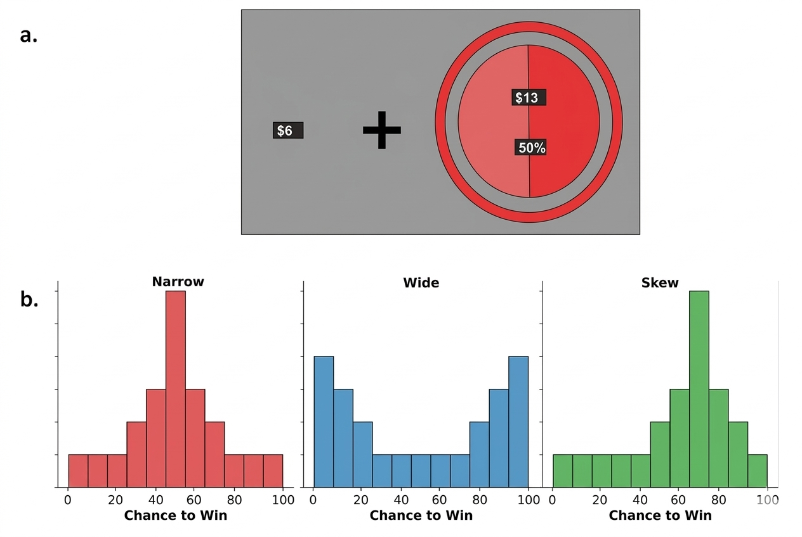
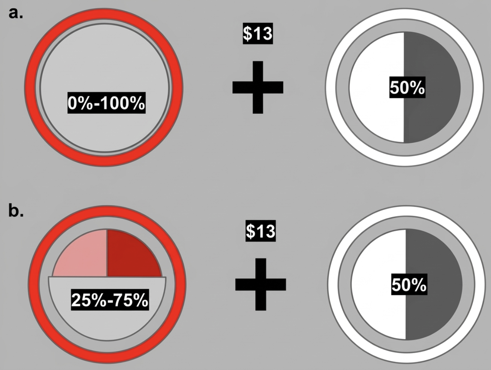
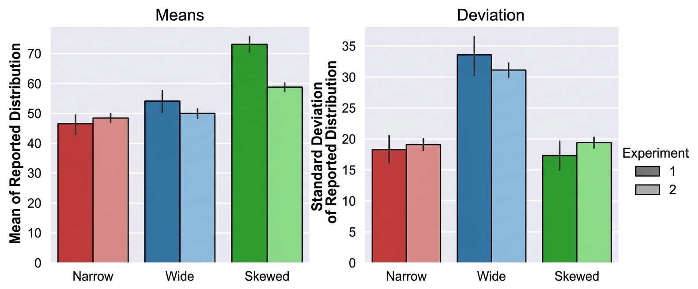
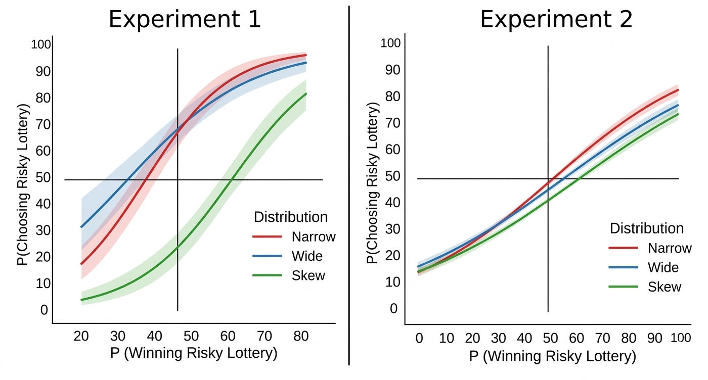
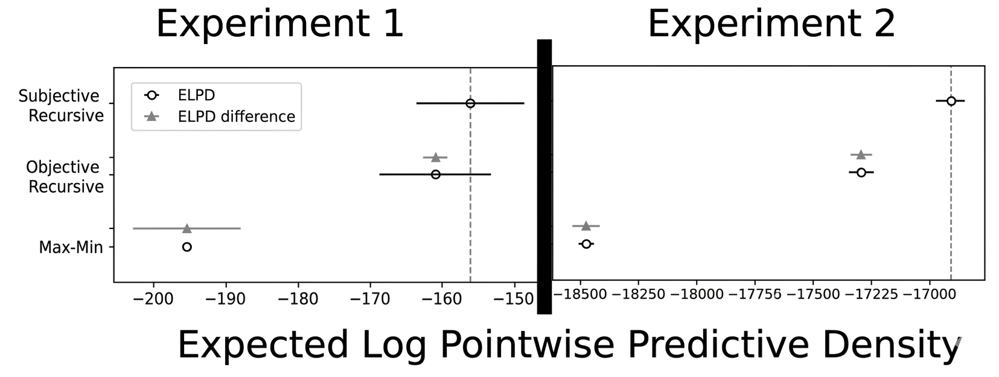
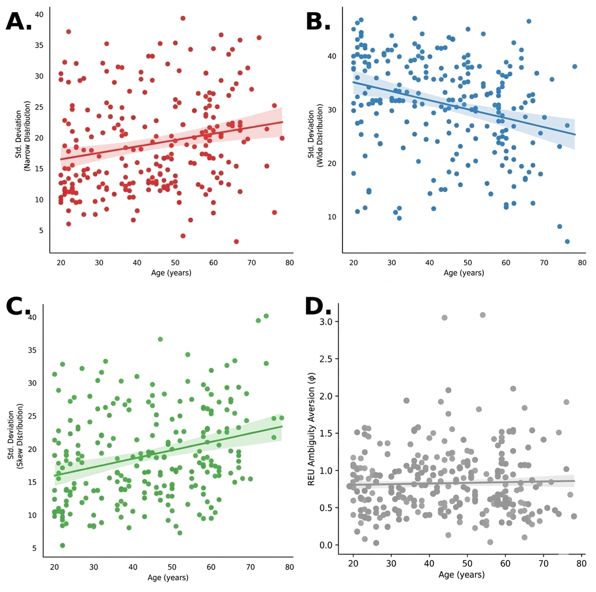

Ambiguity preferences are distinct from beliefs about risk
Abstract
Ambiguity avoidance in decision-making may reflect either stable preferences for certainty or uncertainty in beliefs formed through limited experience. Prior studies have commonly used the max–min expected utility (MMEU) model to interpret ambiguity-related decisions, but MMEU confounds preferences with beliefs by focusing on the range of possible probabilities rather than how individuals form them. We conducted two experiments (N = 53; N = 298) using a Linked Colored Lottery Task to evaluate whether ambiguity avoidance reflects stable preferences or beliefs about outcome distributions. Participants first learned to associate colors with distinct outcome distributions by sampling from them and then made incentivized choices between options that varied in ambiguity. This design allowed us to observe how beliefs about distributional variance influenced decisions and to distinguish whether choices reflected belief construction processes versus uncertainty evaluation. We compared models based on MMEU and on subjective recursive expected utility (SREU), which explicitly separates beliefs from preferences. In both experiments, model comparison favored SREU, and participants with more dispersed inferred beliefs were more likely to avoid ambiguous options. Sampling patterns and memory for outcomes showed similar effects. Apparent age-related differences in ambiguity avoidance were also better explained by belief variance than by preferences. These results suggest that ambiguity avoidance often reflects perceived imprecision in learned beliefs rather than an inherent aversion to uncertainty—a cognitive rather than affective phenomenon. This distinction clarifies whether individual differences in choice behavior stem from how people form beliefs or from how they evaluate outcomes, with implications for understanding decision-making across learning, memory, and uncertainty processing domains.
Figures





